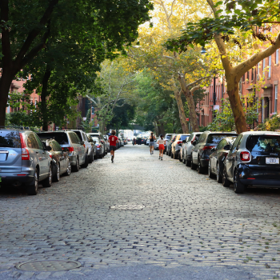

Brooklyn Heights is a residential neighborhood within the New York City borough of Brooklyn. The neighborhood is bounded by Old Fulton Street near the Brooklyn Bridge on the north, Cadman Plaza West on the east, Atlantic Avenue on the south, and the Brooklyn–Queens Expressway or the East River on the west. Adjacent neighborhoods are Dumbo to the north, Downtown Brooklyn to the east, and Cobble Hill and Boerum Hill to the south.
Originally referred to as Brooklyn Village, it has been a prominent area of Brooklyn since 1834. The neighborhood is noted for its low-rise architecture and its many brownstone rowhouses, most of them built prior to the Civil War. It also has an abundance of notable churches and other religious institutions. Brooklyn's first art gallery, the Brooklyn Arts Gallery, was opened in Brooklyn Heights in 1958. In 1965, a large part of Brooklyn Heights was protected from unchecked development by the creation of the Brooklyn Heights Historic District, the first such district in New York City. The district was added to the National Register of Historic Places in 1966.
Directly across the East River from Manhattan and connected to it by subways and regular ferry service, Brooklyn Heights is also easily accessible from Downtown Brooklyn. Columbia Heights, an upscale six-block-long street next to the Brooklyn Heights Promenade, is sometimes considered to be its own neighborhood.